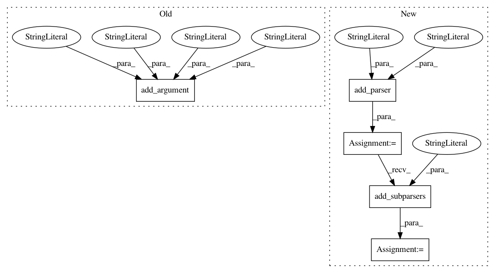

85400dbc865f2d8e632242153fa4576e711f104d,cnvlib/commands.py,,,#,1792
Before Change
"variant" = CNA regions with non-neutral copy number;
"ploidy" = CNA regions with non-default ploidy.
[Default: %(default)s])
P_export_bed.add_argument("-y", "--male-reference", action="store_true",
help=Was a male reference used? If so, expect half ploidy on
chrX and chrY; otherwise, only chrY has half ploidy. In CNVkit,
if a male reference was used, the "neutral" copy number (ploidy)
of chrX is 1; chrY is haploid for either gender reference.)
P_export_bed.add_argument("-o", "--output", help="Output file name.")
P_export_bed.set_defaults(func=_cmd_export_bed)
After Change
// export ----------------------------------------------------------------------
P_export = AP_subparsers.add_parser("export",
help=Convert CNVkit output files to another format.)
P_export_subparsers = P_export.add_subparsers(
help="Export formats (use with -h for more info).")
// BED special case: multiple samples"s segments, like SEG
def _cmd_export_bed(args):
In pattern: SUPERPATTERN
Frequency: 4
Non-data size: 5
Instances
Project Name: etal/cnvkit
Commit Name: 85400dbc865f2d8e632242153fa4576e711f104d
Time: 2016-10-05
Author: eric.talevich@gmail.com
File Name: cnvlib/commands.py
Class Name:
Method Name:
Project Name: etal/cnvkit
Commit Name: 8c9c03c9c7814a9d1d76e87788766ddc36ef7239
Time: 2015-11-07
Author: eric.talevich@gmail.com
File Name: cnvlib/commands.py
Class Name:
Method Name:
Project Name: etal/cnvkit
Commit Name: 47f6b481964339b4a7ae8e15f3a3610b9722aeb6
Time: 2018-01-10
Author: eric.talevich@gmail.com
File Name: cnvlib/commands.py
Class Name:
Method Name:
Project Name: etal/cnvkit
Commit Name: f344df034cb674e198996da63d430287394242bd
Time: 2015-12-11
Author: eric.talevich@gmail.com
File Name: cnvlib/commands.py
Class Name:
Method Name: